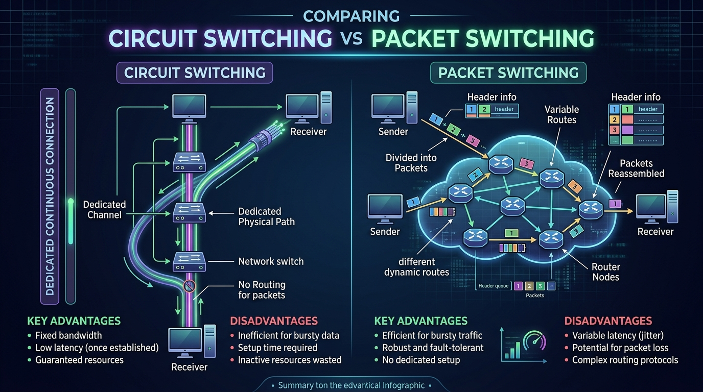

Understand Circuit, Packet, and Message switching techniques, and master core network performance metrics: Bandwidth, Throughput, Latency, Bandwidth-Delay Product (BDP), and Jitter.
A switched network consists of a series of interconnected nodes called **switches**. Switching is the mechanism of forwarding data from an input port to an output port toward its ultimate destination. The three traditional switching techniques are:
In Circuit Switching, a dedicated physical communication path is established between the sender and receiver for the entire duration of the connection. The connection goes through three distinct phases:
In Packet Switching, messages are divided into smaller pieces called **packets**. Each packet contains data payload plus control headers (Source/Destination IP, sequence numbers). Packets travel independently through intermediate switches using store-and-forward.
In Message Switching, data is sent as an entire complete message (not broken into packets). Each intermediate switch receives the entire message, stores it on disk/memory, and forwards it to the next switch when the outgoing line becomes free (**Store-and-Forward**).
Historical usage: Telegraph systems, paper tape switching. Obsolete in modern high-speed IP networks due to huge memory requirements at intermediate switches.

| Feature | Circuit Switching | Packet Switching | Message Switching |
|---|---|---|---|
| Dedicated Path | Yes (Reserved beforehand) | No (Dynamic / Shared) | No (Store-and-forward) |
| Data Division | Continuous bitstream | Divided into Packets | Entire Message |
| Setup Delay | Required (Call setup time) | None (Datagram mode) | None |
| Bandwidth Utilization | Inefficient (Reserved even if idle) | Highly Efficient (Dynamic sharing) | Moderate |
| Store-and-Forward | No | Yes (at packet level) | Yes (at message level) |
| Primary Usage | Voice calls (PSTN) | Internet data, Web, VoIP | Telegraph (Historical) |
Latency (Total Delay) is the total time it takes for a message to travel from the sender to the receiver. It is the sum of four individual delay components:
| Delay Component | Definition | Formula |
|---|---|---|
| Propagation Delay | Time taken for a bit to travel from sender to receiver over the medium distance. | Distance / Propagation Speed |
| Transmission Delay | Time required to push all bits of a packet onto the physical wire. | Packet Size (bits) / Bandwidth (bps) |
| Queuing Delay | Time spent by a packet waiting in router queues before being processed. | Varies with network congestion |
| Processing Delay | Time taken by a router to inspect packet header, check errors, and determine route. | Hardware dependent (microseconds) |
BDP defines the maximum number of bits that can be "in-flight" in the network pipe at any given moment (filling the pipe).
Jitter is the variation or fluctuation in packet arrival delays. If packet 1 arrives in 20 ms, packet 2 in 40 ms, and packet 3 in 25 ms, the variation is jitter.
High jitter degrades real-time communication like VoIP calls and video conferencing, causing distortion or jerky playback. Equalizing buffers are used to smooth out jitter.